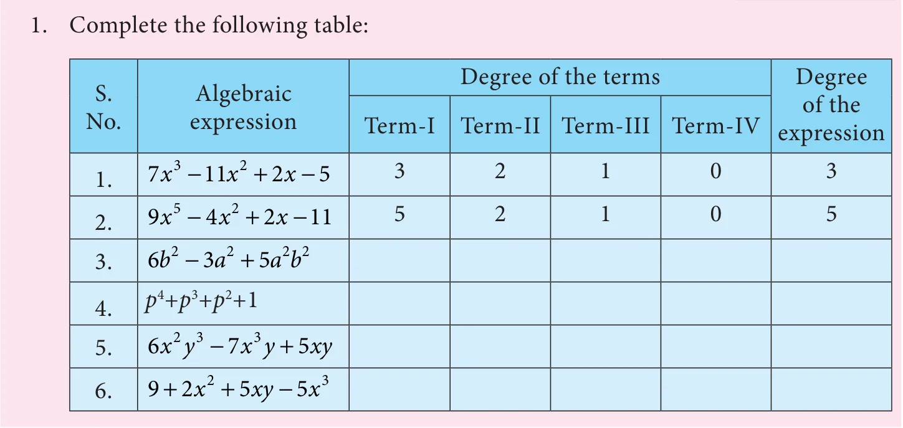

Let us recall about algebraic expression which we have studied earlier.
3.5.1 Recap of Algebraic expression
We have learnt that while constructing an algebraic expression, we use mathematical operators like addition, subtraction, multiplication and division to combine variables and constants.
Now, we have learnt about exponents. Note that exponential notations also can be used in the construction of Algebraic expressions.
Let us recall some basic concepts about expressions.
Consider the expression \(2x + 3\), which is obtained by multiplying the variable \(x\) with the constant 2 and then adding the constant 3 to the product.
This expression is binomial as it contains two terms. The term \(2x\) is a variable term and 3 is a constant term. 2 is the co-efficient of \(x\).
The terms with same variables are called like terms. For example, \(-7x\), \(2x\) and \(5x\) are like terms. But, term with different variables are called unlike terms. For example, \(-2x, 7y\) are unlike terms.
We can add or subtract like terms only. We know that \(2x + 5x = 7x\). But, when we add unlike terms, it results in new expression. For example, \(2x\) and \(5y\) are unlike terms, thus resulting in new expression \(2x + 5y\).
3.5.2 Degree of Expressions
To know the degree of an expression, first let us try to understand the degree of a variable by relating it with the exponents of numbers. Let us consider the square numbers. They have different base and same exponents.
The geometrical representation of square numbers are given below.


In general, if we consider the side of a square as a variable '\(x\)' then its area will be \(x \times x\) sq. units. This can be denoted as '\(x^2\)'. Thus we have an algebraic expression with exponent notation.

If we consider the term \(x^2\) as a monomial expression, the highest power of the expression is its exponent, that is 2.
Similarly, when length '\(l\)' units and breadth '\(b\)' units are variables of a rectangle, then its area is \(l \times b = lb\) sq. units. We can consider \(lb\) as a term in an algebraic expression, where \(l\) and \(b\) are factors of \(lb\).
The highest power of the expression \(lb\) is also 2, as we have to add up the powers of the variable factors.
Note
- When no exponent is explicitly shown in a variable of a term, it is understood to be 1. For example, \(11p = 11p^1\).
- For an expression in \(x\), if the terms of the expressions are in descending powers of \(x\) and the like terms are added, then we say that it is in the standard form.
For example, \(x^4 - 3x^3 + 5x^2 - 7x + 9\) is in the standard form. It is easier to find the highest power term when the expression is in standard form. Highest power of this expression is 4. - The highest degree term of an algebraic expression is called as leading term.
Let us consider an algebraic expression: \(x^3 - 3x^2 + 4\).
The terms of the above expression are \(x^3\), \(-3x^2\) and 4. Exponent of the term \(x^3\) is 3 and \(-3x^2\) is 2.
Thus, the term \(x^3\) has the highest exponent, that is 3.
Now, consider the expression, \(3x^4 - 4x^3y^2 + 8xy + 7\).
Take each term and check its power. In \(3x^4\), exponent is 4, hence its degree is 4. In \(-4x^3y^2\), the sum of powers of \(x\) and \(y\) is 5, hence its degree is 5. In \(8xy\), the sum of powers is 2.
Therefore, the term with highest power in the above expression is \(-4x^3y^2\) and its power is 5, which is called as degree of this expression.
The term(s) containing the highest power of the variables in an expression is called the degree of expression.
The degree of any term in an expression can only be a positive integer. Also, degree of expression doesn't depend on the number of terms, but on the power of variables in the individual terms. The degree of constant term is 0.
Try these

- Identify the like terms from the following:
- \(2x^2y,\ 2xy^2,\ 3xy^2,\ 14x^2y,\ 7yx\)
- \(3x^3y^2,\ y^3x,\ y^3x^2,\ -y^3x,\ 3y^3x\)
- \(11pq,\ -pq,\ 11pqr,\ -11pq,\ pq\)
Example 3.14 Find the degree of the following expressions.
(i) \(x^5\) (ii) \(-3p^3q^2\) (iii) \(-4xy^2z^3\)
(iv) \(12xyz - 3x^3y^2z + z^8\) (v) \(3a^3b^4 - 16c^6 + 9b^2c^5 + 7\)
Solution
- In \(x^5\), the exponent is 5. Thus, the degree of the expression is 5.
- In \(-3p^3q^2\), the sum of powers of \(p\) and \(q\) is 5 (that is, 3+2). Thus, the degree of the expression is 5.
- In \(-4xy^2z^3\), the sum of powers of \(x\), \(y\) and \(z\) is 6 (that is, 1+2+3). Thus, the degree of the expression is 6.
- The terms of the given expression are \(12xyz,\ 3x^3y^2z,\ z^8\)
Degree of each of the terms: 3, 6, 8
Terms with highest degree: \(z^8\).
Therefore, degree of the expression is 8.
- The terms of the given expression are \(3a^3b^4, -16c^6, 9b^2c^5, 7\)
Degree of each of the terms: 7, 6, 7, 0
Terms with highest degree: \(3a^3b^4, 9b^2c^5\)
Therefore, degree of the expression is 7.
Example 3.15 Add the expressions \(4x^2 + 3xy + 9y^2\) and \(2x^2 - 9xy + 6y^2\) and find the degree.
Solution
This can be written as \((4x^2 + 3xy + 9y^2) + (2x^2 - 9xy + 6y^2)\)
Let us group the like terms, thus we have
\((4x^2 + 2x^2) + (3xy - 9xy) + (9y^2 + 6y^2) = x^2(4 + 2) + xy(3 - 9) + y^2(9 + 6)\)
\(= 6x^2 - 6xy + 15y^2\)
Thus, the degree of the expression is 2.
Example 3.16 Subtract \(x^3 - x^2 + x + 3\) from \(3x^3 - 2x^2 - 7x + 6\) and find the degree.
Solution
This can be written as \((3x^3 - 2x^2 - 7x + 6) - (x^3 - x^2 + x + 3)\)
When there is a −ve sign before the brackets, it can be removed by changing the sign of every term inside the bracket.
\((3x^3 - 2x^2 - 7x + 6) - (x^3 - x^2 + x + 3) = 3x^3 - 2x^2 - 7x + 6 - x^3 + x^2 - x - 3\)
\(= (3x^3 - x^3) + (-2x^2 + x^2) + (-7x - x) + (6 - 3)\)
\(= x^3(3 - 1) + x^2(-2 + 1) + x(-7 - 1) + (6 - 3)\)
\(= 2x^3 - x^2 - 8x + 3\)
Hence, the degree of the expression is 3.
Example 3.17 Simplify and find the degree of the expression
\((4m^2 + 3n) - (3m + 9n^2) - (3m^2 - 6n^2) + (5m - n)\)
Solution
\((4m^2 + 3n) - (3m + 9n^2) - (3m^2 - 6n^2) + (5m - n)\)
\(= 4m^2 + 3n - 3m - 9n^2 - 3m^2 + 6n^2 + 5m - n\)
\(= (4m^2 - 3m^2) + (3n - n) + (-3m + 5m) + (-9n^2 + 6n^2)\)
\(= m^2 + 2n + 2m - 3n^2\)
Hence, the degree of the expression is 2.